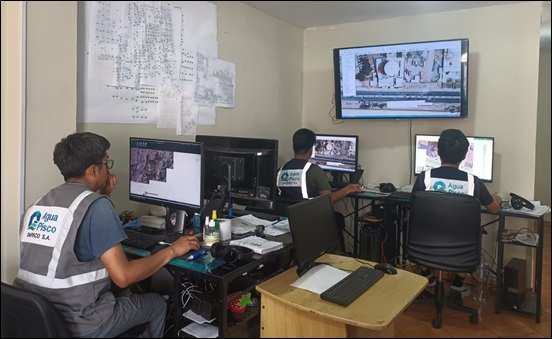
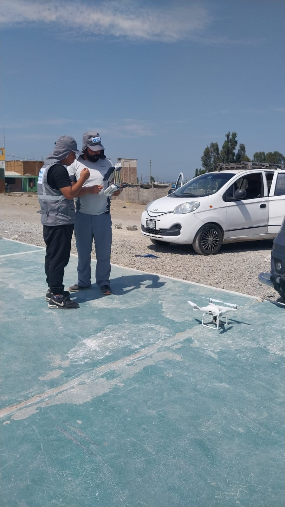
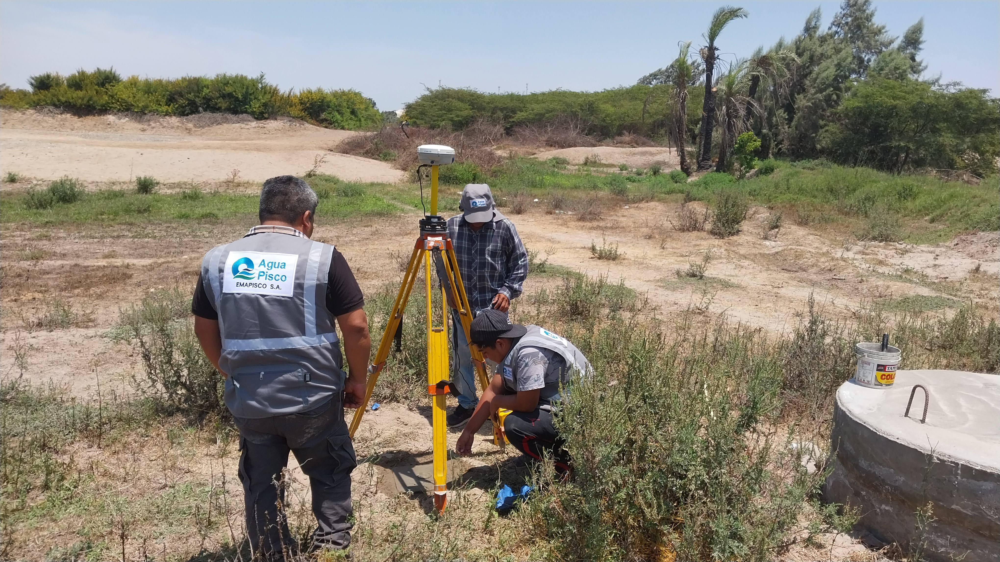

Sobre Nosotros
Soluciones tecnológicas y catastrales enfocadas en mejorar la gestión de información en empresas del sector saneamiento.
Somos especialistas en catastro técnico, gestión comercial y optimización de procesos, ayudando a empresas a mejorar la calidad de sus datos y tomar decisiones estratégicas.
Aplicamos tecnologías SIG, bases de datos y soluciones digitales que permiten automatizar procesos, reducir errores y mejorar la eficiencia operativa.
Nuestro equipo combina experiencia en campo y desarrollo tecnológico para garantizar resultados confiables y sostenibles.
Además, implementamos soluciones digitales que permiten automatizar procesos, reducir errores operativos y mejorar la eficiencia en la gestión de usuarios, facturación y control de servicios.
Nuestro equipo combina experiencia técnica y enfoque estratégico, aplicando metodologías modernas de trabajo para asegurar resultados sostenibles y adaptados a las necesidades de cada cliente.
Aplicamos estándares de calidad en cada proyecto, garantizando que la información recolectada sea confiable y esté actualizada para la toma de decisiones estratégicas.




GALD PERFECTO en cifras
+0
Proyectos completados con éxito, entregando soluciones eficientes y confiables.
+0
Clientes satisfechos que confían en nuestra experiencia y resultados.
0
Años de experiencia aplicando tecnología y metodologías modernas en cada proyecto.
+0
Sistemas implementados para optimizar procesos y mejorar la gestión operativa.
%0
Satisfacción total de nuestros clientes, demostrando compromiso y calidad.
Misión
Optimizar la gestión de información mediante soluciones tecnológicas eficientes.
Visión
Ser líderes en transformación digital en el sector saneamiento.
Valores
Compromiso, integridad y calidad en cada proyecto.
Experiencia
Amplia experiencia en catastro, gestión comercial y soluciones SIG.
¿Por qué elegirnos?
- ✔ Experiencia en campo y tecnología
- ✔ Soluciones personalizadas
- ✔ Enfoque en resultados
Transformamos datos en decisiones inteligentes.